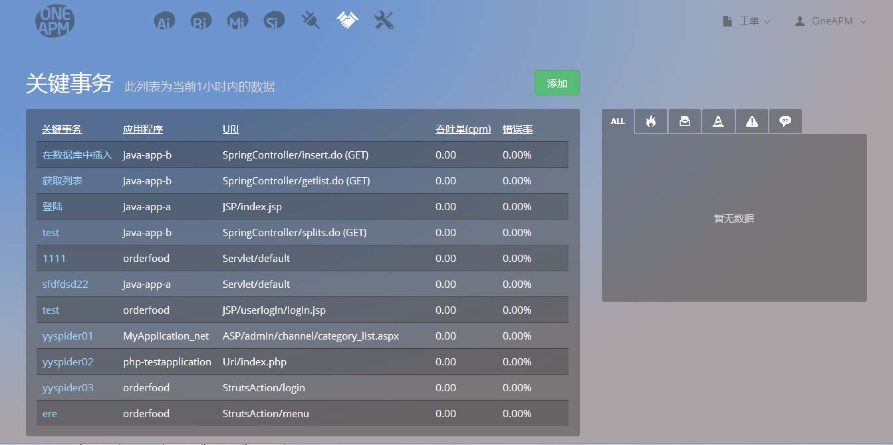

关键事务
首先，什么是关键事务?
- 在 Web 应用中，从业务的角度来看，有些 Web 事务比其它事务更重要，这些重要的 事务需要精确监控。这些事务包括应用中的关键事件（如登录操作或确认购买操作）或从 性能角度来看最重要的事务（如搜索或登录操作）。
- 关键事务功能，允许用户密切监控关键性事务，并在运行异常时收到警告。
关键事务的起始页面，共由产品导航条、用户模块、工单系统、关键事务 列表和添加按钮、报警栏这 5 个部分组成。（产品导航条、用户模块、工单系 统不再赘述。此处重点介绍关键事务列表和添加按钮、报警栏这 2 个部分。）
关键事务列表和添加按钮：
- 在关键事务事务列表，展示了关键事务事务的相关信 息，包括关键事务名、所属应用程序、URI、吞吐量、 错误率。
- 点击添加按钮，可以针对各个应用，添加关键事务。
报警栏：
- 对于超过阈值的关键事务，进行关键事务的报警。
- 关键事务的报警机制与应用程序类似，其策略设置是在“报警策略-关键事务”下。后面将进行详 细介绍。
